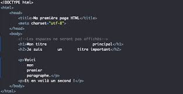

"un langage descriptif utilisé pour structurer le contenu d'une page (ses textes, ses images, ses liens, etc.). Un document HTML est un fichier texte qui contient des balises (ou tag en anglais)."
Définition venant du site: mozilla org pour apprendre les bases du HTMLPour cela il faut rechercher le blocnote dans le dossier accessoire windows puis l'enregistrer dans un dossier, site web sous le nom de index.html.
Suite à ça retrouvez le fichier dans votre explorateur de fichier, et ouvrez le dans un navigateur mais pas Internet Explorer ou Edge.
Comment modifier sa page web ?
Afin de modifier sa page web vous pouvez ajouter du texte dans le bloc note puis, enregistrer le travail grâce à
Ctrl+S.Ensuite sur la page du navigateur il ne vous reste plus qu'a rafraichir la page avec
Ctrl+R.Grâce au HTML on peut faire ce type de code :
la balise : <h1>, qui permet de mettre un grand titre.
la balise : <h2>, qui permet de mettre un titre plus petit.
la balise : <p>, qui permet de rédiger un paragraphe.
les balises : <b>, qui permet de mettre en gras. <i>, qui permet de metre en italique. <u>, qui permet de souligner un texte.
Ma deuxième page